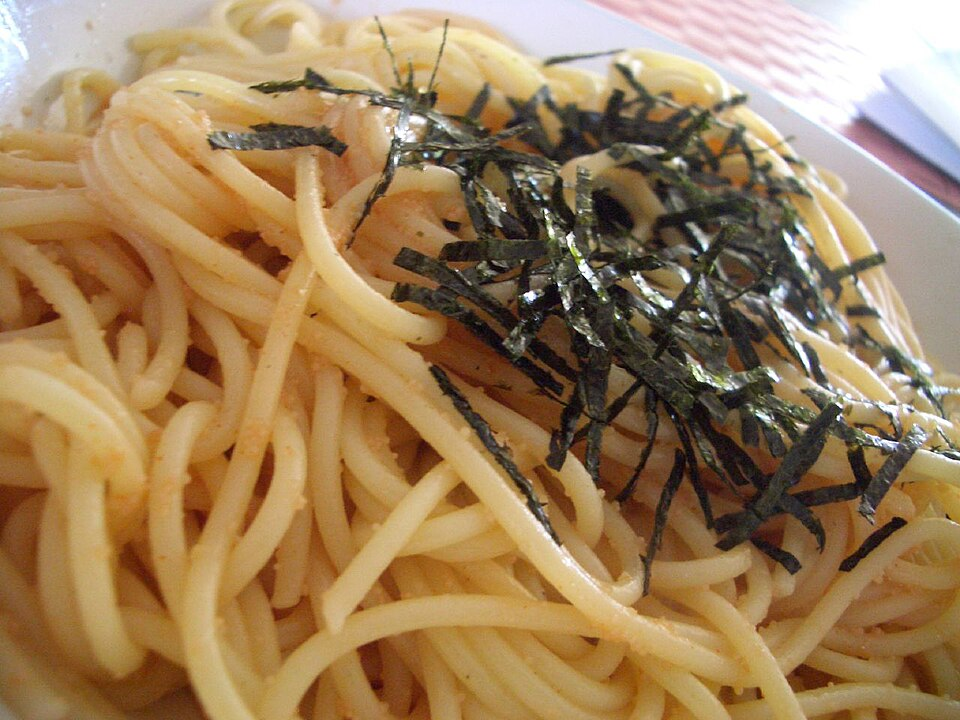

Wafu Umami Foundations
Emulsifying soy sauce, cultured butter, dashi broth, and shiso herb with al dente pasta cooking water to create glossy, clingy sauces without heavy roux.
Explore Wafu Craft →Welcome to Pasuta, Charlotte’s dedicated Japanese Wafu pasta bar located inside Urban District Market at 2315 North Davidson Street. We unite traditional Italian bronze-die pasta craftsmanship with quintessential Japanese flavors: spicy mentaiko cod roe, sweet white miso butter, savory fermented black bean bolognese, and toasted shredded nori seaweed.

Artisanal pasta extrusion and deep umami emulsions since our opening.
Emulsifying soy sauce, cultured butter, dashi broth, and shiso herb with al dente pasta cooking water to create glossy, clingy sauces without heavy roux.
Explore Wafu Craft →Extruding fresh bucatini, tagliatelle, spaghetti, and rigate daily using high-protein semolina flour and bronze dies that produce sauce-gripping texture.
Discover Fresh Pasta →Packaged half-pound boxes of raw, fresh pasta ready for quick three-minute boiling at home, complete with chef-recommended sauce pairing notes.
View Retail Provisions →Open daily from 11:00 AM to 10:30 PM. Order at our counter, grab a craft beer from the food hall bar, and enjoy your meal across indoor lounges or the shaded outdoor patio.
Market Hours & Location Details →